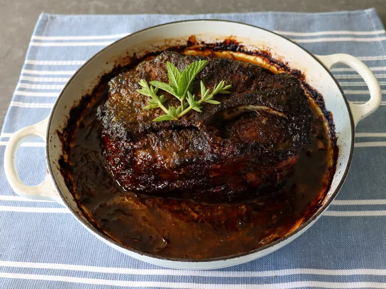

Garlic and Citrus Mojo Pork

The Key to A Juicy and Flavorful Pork Shoulder
The three main components are garlic, citrus, and herb — and there aren’t a lot of things that the trio wouldn’t make better.
You can also include some lemon juice if you want, but all we’re really after is slightly sweet acidity with a little touch of bitterness, and any combination of citrus you like the taste of will work in this easy marinade.
Ingredients
Marinade:
- 1/2 cup mint leaves
- 1/2 cup fresh orange juice
- 1/3 cup oregano leaves
- 1/4 cup olive oil
- 8 cloves peeled garlic
- 2 limes, juiced
- 4 teaspoons kosher salt
- 1 tablespoon ground cumin
- 2 teaspoons smoked paprika
- 1 teaspoon freshly ground black pepper
- 1 teaspoon dried oregano
- 1/4 teaspoon cayenne pepper
Pork Roast:
- 3 1/2 to 4 pounds pork shoulder, bone-in or boneless
- 1 yellow or white onion, sliced
- 1/2 cup water
- Salt as needed
Steps
- Combine mint, orange juice, fresh oregano, olive oil, garlic cloves, lime juice, salt, cumin, paprika, pepper, ground oregano, and cayenne pepper in a blender; blend until smooth.
- Poke pork all over with a small sharp knife and place into a container just large enough to fit the meat. You can also use a resealable plastic bag.
- Pour over marinade and toss to coat. Spoon any excess marinade from the bottom of the container over the top of the meat before covering. Marinate in the refrigerator for 24 hours. You can go as few as 6 or as long as 48 hours.
- Preheat the oven to 300 degrees F (150 degrees C).
- Place onions in a roasting pan, and make a space in the middle. Place pork in the pan, fat side up, and transfer the marinade over the onions on each side. Pour in water.
- Transfer into the preheated oven and roast until internal temperature reaches 190 to 195 degrees F (87 to 90 degrees C), about 5 hours. For best results baste pork occasionally with liquids in the pan. Add more water if the pan gets too dry.
- When pork is done, remove from the oven, and cover with foil. Let rest for 1 hour.
- Serve by tearing meat apart like for pulled pork, or by removing large chunks, and slicing.